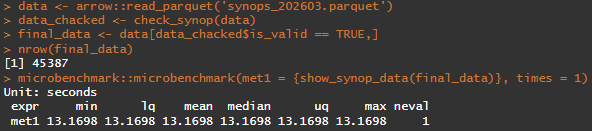

Overview
The goal of synopR is to provide a simple and fast tool for decoding FM 12 SYNOP (Report of surface observation from a fixed land station) messages, following the WMO standards (World Meteorological Organization (WMO). Manual on Codes (WMO-No. 306), Volume I.1. Geneva, 2019.). It focuses on extracting data from Sections 0, 1 and 3.
synopR is dependency-free! Only R (>= 4.1.0) is needed.
Installation
Install from CRAN (version 1.0.0):
install.packages("synopR")Or install the development version from GitHub with:
# install.packages("devtools")
devtools::install_github("ezequiel1593/synopR", build_vignettes = TRUE)Features
More than 50 meteorological parameters can be obtained in just seconds. A detailed guide of data extracted by
show_synop_data()is available in the “Extracted_data_Reference” vignette.You can check the structural integrity of your SYNOP messages before decoding:
library(synopR)
check_synop(c("AAXX 01183 87736 11463 41813 10330 20148 39982 40072 5//// 60001 70700 83105 333 56600 83818=",
"AAXX 01183 87736 11463 41813 10330 20148 39982 4007 5//// 60001 70700 83105 333 56600 83818="))Download raw SYNOP messages from Ogimet with
download_from_ogimet(), or download, check and decode all at once withdirect_download_from_ogimet().The package includes a parser specifically designed for the comma-separated format used by Ogimet:
library(synopR)
raw_data <- "87736,2026,01,01,18,00,AAXX 01183 87736 11463 41813 10330 20148 39982 40072 5//// 60001 70700 83105 333 56600 83818="
# Parse and decode
decoded <- parse_ogimet(raw_data) |> show_synop_data()
print(decoded)Performance
show_synop_data(), the core function, is completely vectorized. It means it’s super fast!

45k SYNOP messages decoded in just 13 seconds.
Constraints & Assumptions
-
Sections: The package does not support sections
222(maritime data),444(data for clouds with base below station level) and555(data for national use, which is quietly discarded). - Time of observation: Observations are assumed to occur at the time indicated in Section 0 (Group 9 from Section 1 is currently ignored).
- Humidity: Group 2 (Section 1) contains dew point, not relative humidity.
- Geopotential height: Only pressure levels 850, 700 and 500 hPa are supported.
-
Trace Precipitation: They are converted to
0.01(mm). - Groups not supported: Groups starting with 54 and 9 from Section 3 are currently ignored.
Issues
Feel free to report any issue you may find: Github
- “NA introduced by coercion” are generally associated with a specific part of the SYNOP message incorrectly codified.
Documentation
The complete documentation, including function references and tutorials is available at: https://ezequiel1593.github.io/synopR/
Citation
Elias E (2026). synopR: Fast Decoding of SYNOP (Surface Synoptic Observations) Meteorological Messages. R package version 1.0.0, https://ezequiel1593.github.io/synopR/.